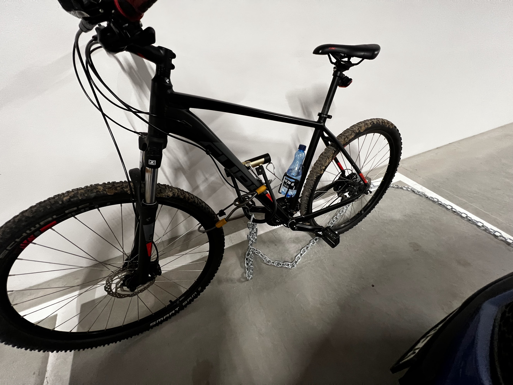

Między wtorkowym wieczorem(12.09) a piątkowym popołudniem(15.09) skradziono mi rower z podziemnego parkingu domu Jasielska 5/5a. Jeżeli ktoś posiada nagrania z wideorejestratora, proszę o sprawdzenie tych dni. Rower był na miejscu 46, przywiązany do łańcucha.
Na tym samym parkingu w ubiegły piątek (8.09, w nocy z piątku na sobotę) skradziono inny rower
Wszelkie informacje proszę kierować na e-mail moskovecandrey@gmail.com lub dzwonić/pisać pod numer 796091735
Marka roweru Cube, czarny mat z czerwonymi napisami.
Za skuteczną pomoc oferuję NAGRODĘ PIENIĘŻNĄ
